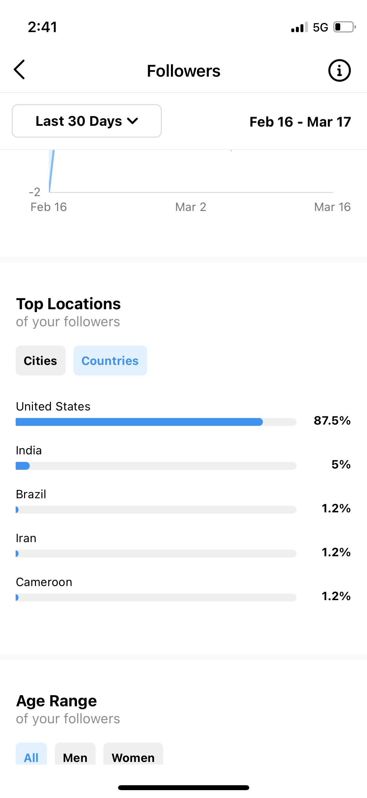

Introduction
While learning about libraries in this program and working in a college library, I have worked to improve my global perspective on the library and information science field. I've learned about international libraries in this program, and have worked to share a global perspective on information with students in my own library. Reading literature published by other library and information science scholars has provided me with additional direction on how to increase my understanding and perspective of our field internationally. Overall, with all my efforts to connect myself with other people around the world, I have noticed a dramatic and important improvement in my communication skills. I have become more aware of people's needs, perspectives, and accomplishments, which are different than my own.
Understanding global perspectives
In order to understand global perspectives, it is important to hear the reasons why information and library science scholars are arguing for a strengthened global perspective in their field. Brahma & Verma (2021) argue that national libraries should have their global presence evaluated because "national libraries are globally available to the public," and so "library professionals need to be more conscious, meticulous, effective and dynamic in every way" (p. 427). Ameen et al. (2020) argue that the academic library should "[create] equal opportunities to access knowledge by all their communities," and should shift from being "collections and sources-centered" to being "client and access-centered" (p. 427). And Avieson & Di Lauro (2021) recognize Wikipedia as an international source of information and information-sharing, yet needs to "recognize and counter its systemic biases" (p. 205). Still, Wikipedia is a platform offering information freely (for those with access to the Internet) on an international level, which some libraries and educational systems have been criticized for not offering. From this perspective, it's clear that information is available worldwide, but lacks proper representation, educational philosophy, and technology.
Global communication online
The Internet has provided a suitable space for libraries around the world to share their content, services, and overall presence. Now that global communication is easier than ever before, it has become important for libraries to evaluate their contributions to the web. Brahma & Verma (2021) not only evaluate 41 national library websites in Asia for accessibility, content and "information gathering" success, but they also provide a link to each website, which enables the reader to also become more aware and understanding of libraries around the globe. They found all 41 libraries to have used graphics on their website for important information, and 17 libraries to use animation (432). The languages offered on their website range from one (5 countries), to five (one country: Lebanon); most offer three languages. All countries offered their website in English, which shows that English is considered the global internet language in Asia. Five countries only offer their website content in English. The general information included on their website consists of their hours, upcoming events and news, and an about/history section (p. 435). Additionally, most of these libraries also communicate with their patrons via Facebook, Youtube, Twitter and Instagram (30-50%). Pinterest, LinkedIn, blogs, and other platforms were used by 5% or fewer libraries (p. 439).
Recent literature on global perspectives among library professionals centers around: libraries' online presence, awareness of other cultures and their own biases, and accessibility of information. These issues offer a roadmap for the librarian seeking to improve their global perspective on the ways that information is shared and interpreted.
Evidence
1) Research paper: Mzuzu University Library Fire
 The Mzuzu University Library Fire
The Mzuzu University Library Fire
I wrote this research paper in INFO 259: Preservation Management. For this paper, I researched the Mzuzu University Library and how it operated from 2010 to 2020. I focused on how the Mzuzu Unversity Library recovered from a large, devastating fire in 2015. However, I was surprised to find the same scholars reporting on this library several times over the course of a decade, and gained insight to their priorities and observations. For example, Aubrey Chaputula was an assistant librarian at Mzuzu University from 2014 to at least 2020, and wrote and published often-critical articles about its inner workings throughout this time period, highlighting its disorganization and inability to provide sufficient resources for its students. After reading Chaputula's articles with the understanding that he worked at Mzuzu University as he wrote them, I felt incredibly close to this library. In fact, it has similar issues to the library where I work, including: budget issues, lack of a collection policy, and internal hiring disorganization. Knowing that library professionals seek similar improvements on other continents helps me determine which direction I should take librarianship and global communication.
I included this piece of evidence to show how learning about the Mzuzu University Library has contributed to my global perspective on preservation methods and library management.
2) Instagram post series: Health Heroes from History
Above: "Health Heroes from History" Instagram slideshow.
Left: CNU Library Instagram analytics.
At work as a library assistant for a health sciences college, I created this series of Instagram posts which I call "Health Heroes from History." For the past fourteen months, I've developed this series to include 25 health professionals from around the globe. On their birthdays, I research these health professionals' lives, edit photos of them on Canva, and write them small bios in the Instagram caption. There are usually multiple images per health hero, depending on how much time I have at work to devote to these posts.
What I found most interesting about these health professionals was how their careers were shaped by their environments. Each health professional has had important experiences that have shaped them into the person they are (or were, for those who have passed). Since each "health hero" made a significant contribution to science, these experiences often revealed a need within their community or academic field.
I created this series for multiple reasons. Our health sciences college has a diverse student population, and while they study in the library, I've overheard some express uncertainty for their futures and intimidation by the competition seen in the health sciences. Also, I notice people outside of the US interacting with my posts (through my Instagram profile analytics, a photo of which is linked above).
I included this Instagram series as a piece of evidence in this competency to demonstrate how in the library, I work to share a global perspective on my students' science and health studies. By learning about these health professionals' experiences, I have also gained valuable insight to a number of different global perspectives. This "health heroes from history" project has become one of my favorite projects that I have worked on in the library.
Conclusion
My two pieces of evidence demonstrate two different aspects of global perspective: first, my research paper showed how I strengthened my own global perspective. Second, my Instagram posts on "health heroes from history" show how I instill a global perspective in students at my health sciences college library. Information professionals today find a continued need for improvement in librarians' global accessibility, communication and understanding. I also plan to continue providing freely accessible pieces of information on social media platforms like Instagram, and to share free educational resources (like Wikipedia lists and open-access courses) on websites I can build freely on Github. As a result of working through this program and in an academic library, I've learned how essential it is for library professionals to stay mindful of their global accessibility and awareness.
References
Ameen, K., Chu, C.M., Lilley, S., Ndumu, A., & Raju, J. (2020). Multiple ways of knowing: Global perspectives on academic libraries re-imagining systems of knowledge. College & Research Libraries News 81(9), 426-433.
Avieson, B., & Di Lauro (2021). Special issue on the worlds of Wikipedia. New Review of Hypermedia and Multimedia 27(3), 205-206.
Brahmna, K., & Verma, M.K. (2021). Web content analysis of national libraries' websites in Asia: An evaluation. International Journal of Information Science and Management 20(1), 427-448.